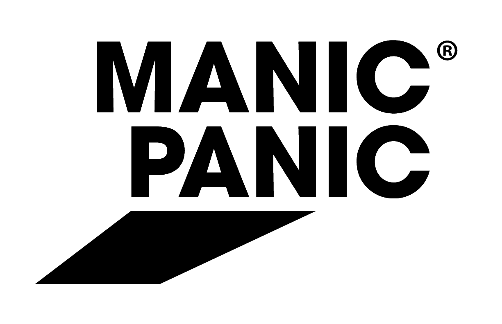
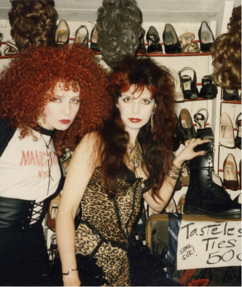
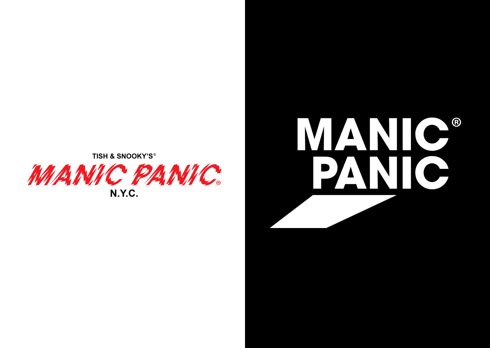
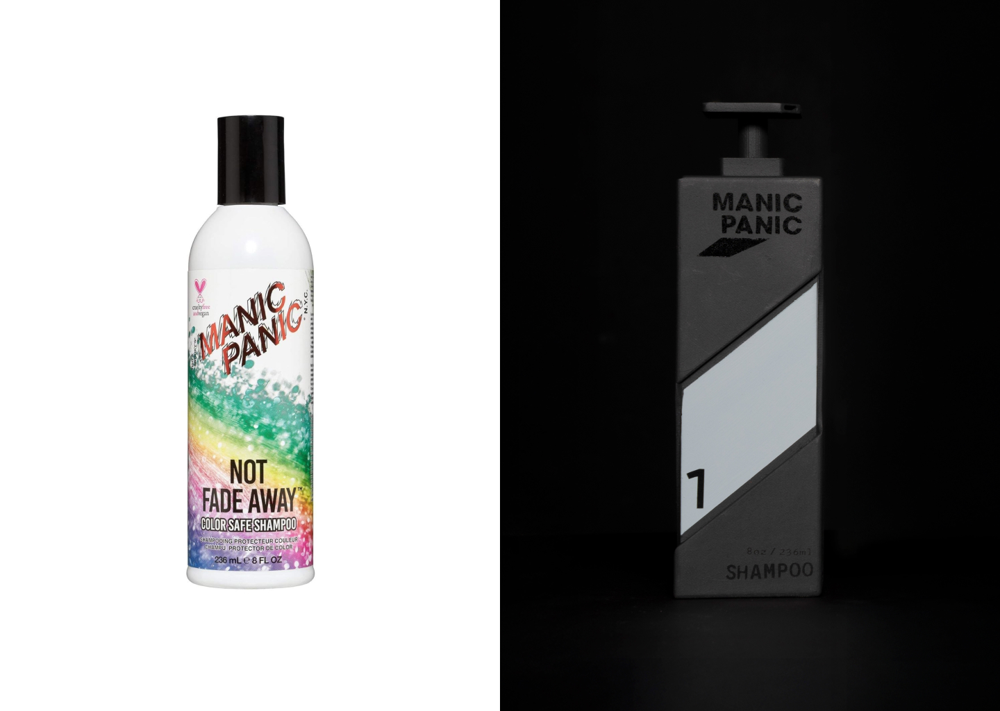
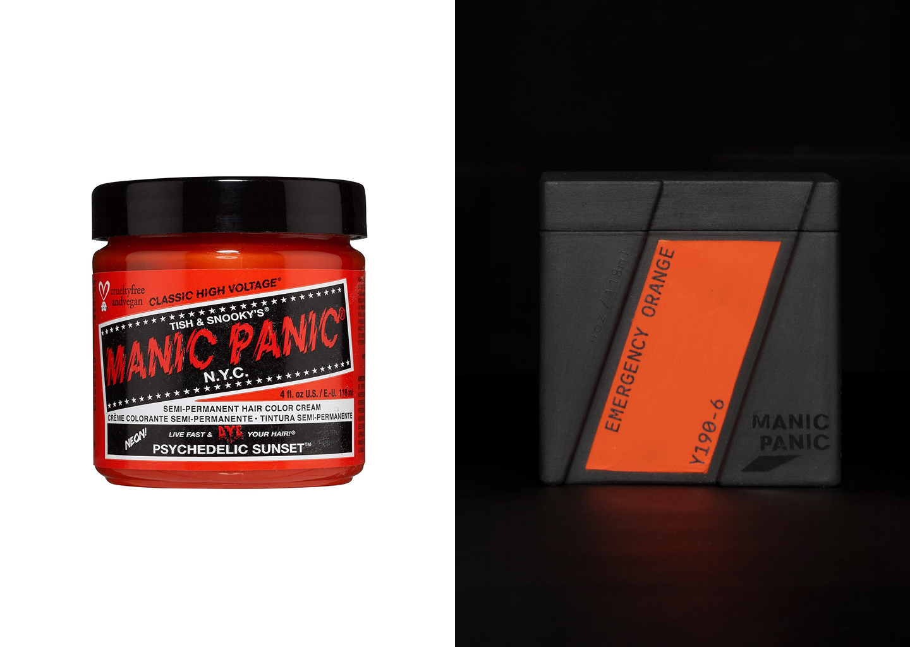
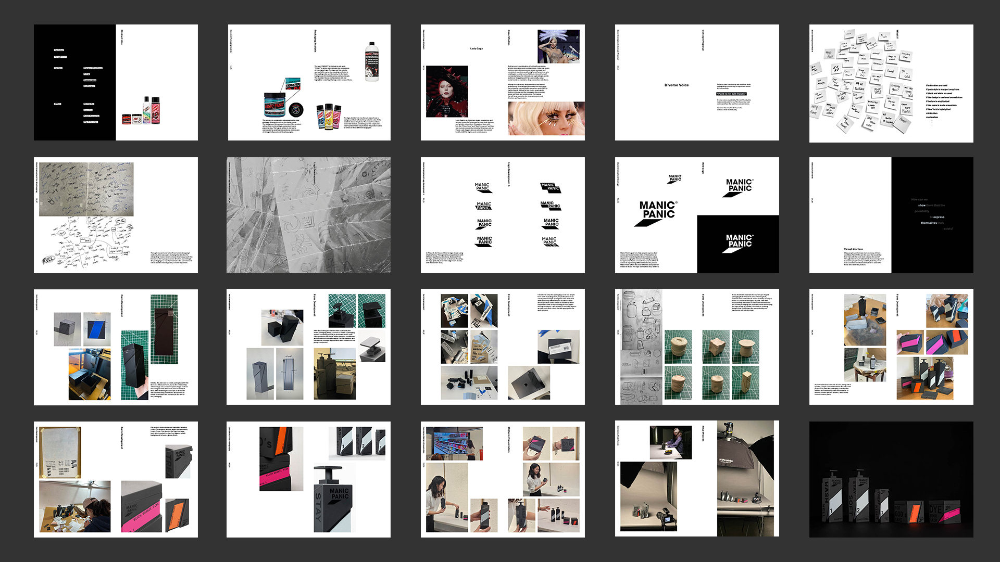

Rebranding
Packaging Design

Founded in 1977 by sisters Tish and Snooky Bellomo, Manic Panic is one of the original pioneers of alternative beauty. Born out of the New York punk scene, the brand has stayed true to its roots for nearly five decades — independently owned, women-led, and uncompromisingly bold.
From the beginning, Manic Panic committed to vegan and cruelty-free formulations, long before it became an industry standard. Today, their hair color and cosmetics are sold and distributed worldwide, carrying the same rebellious spirit and authentic values that defined the brand from day one.
From the beginning, Manic Panic committed to vegan and cruelty-free formulations, long before it became an industry standard. Today, their hair color and cosmetics are sold and distributed worldwide, carrying the same rebellious spirit and authentic values that defined the brand from day one.
Share our rainbow vision of
Peace, Love and Glamour throughout the universe.
Peace, Love and Glamour throughout the universe.

Challenge
Outdated
Manic Panic has kept its original punk visuals for 40 years. The look that once defined the brand now reaches fewer and fewer people.
Punk's era has passed. The people coloring their hair today speak in completely different visual languages. Manic Panic still talks like the 80s, but the way people express themselves has already moved on.
Manic Panic has kept its original punk visuals for 40 years. The look that once defined the brand now reaches fewer and fewer people.
Punk's era has passed. The people coloring their hair today speak in completely different visual languages. Manic Panic still talks like the 80s, but the way people express themselves has already moved on.
Punk was never a style
Manic Panic preserved punk's appearance for 40 years, but lost its function. From the start, punk was about one thing: giving people a voice.
Manic Panic preserved punk's appearance for 40 years, but lost its function. From the start, punk was about one thing: giving people a voice.
You decide what to show. Whoever you want to be through this product, that choice belongs to you. Manic Panic simply makes your voice visible.
The logo and visual system are built on stage light. The customer steps into the spotlight. Manic Panic is the shadow behind them, the medium that puts them in the light.
From a style to a stage.
The brand should not sell a look. It should hand over a stage. Manic Panic is not the performer. It is the medium that carries your voice to the world.
The brand should not sell a look. It should hand over a stage. Manic Panic is not the performer. It is the medium that carries your voice to the world.
“Punk is not just music.”
'Diverse Voice’ is for all those who embrace their individuality.



MANIC PANIC IS
is Active.
is Vibrant.
is Authentic.
is Human.
is Fresh.
is Conversational.
is Vibrant.
is Authentic.
is Human.
is Fresh.
is Conversational.
LOGO
Typeface_Primary
ITC Avant Garde Gothic
Bold
Bold
ABCDEFGHIJKLM
NOPQRSTUVWXYZ
abcdefghijklm
nopqrstuvwxyz
0123456789
!@#$%^&*()_+-=
{}[]|\:;"'<>,.?/
NOPQRSTUVWXYZ
abcdefghijklm
nopqrstuvwxyz
0123456789
!@#$%^&*()_+-=
{}[]|\:;"'<>,.?/
Typeface_Secondary
Antikor Text
Book
Book
ABCDEFGHIJKLM
NOPQRSTUVWXYZ
abcdefghijklm
nopqrstuvwxyz
0123456789
!@#$%^&*()_+-=
{}[]|\:;"'<>,.?/
NOPQRSTUVWXYZ
abcdefghijklm
nopqrstuvwxyz
0123456789
!@#$%^&*()_+-=
{}[]|\:;"'<>,.?/
Color Palette
Pantone 5445
b7c9d3
b7c9d3
000000



